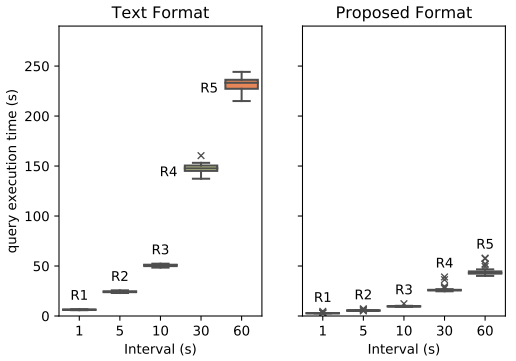

Scalable Data Systems for LiDAR and Imagery
Data Integration
PhD Stage-2 Transfer Assesment
Chamin Nalinda
Background

Gaps
- No comparable systems exist.
- Most integrated systems are imagery systems. (Lewis2017 et al. (2017), Giuliani2017 et al. (2017), Baumann et al. (2016))
- Existing point cloud and imagery systems are not spatially integrated. (Whitby et al. (2017), Baumann et al. (2017))
- Poor scalability of most LiDAR systems. (Liu et al. (2018), VanOosterom et al. (2018), Meyer et al. (2019))
- "Data lake" & "Polystore" systems new to geo-science research.
“How to enable efficient access to spatially integrated LiDAR and imagery data in a scalable manner?”
Research Questions

Progress to Date
1. 30 credits ☑
- ▶ HPC (A-)
- ▶ Big Data Programming (A-)
2. Literature Survey ☑
- ▶ Paper 1 :
- ▶ Paper 2 :
3. RQ 1: Global index
- ▶ review spatial indexes
- ▶ local testing/ distributed testing
- ▶ implemented Vo et al. (2018)
3. RQ 1: Global index (contd)

Progress to Date
4. RQ 2: Architecture
- ▶ RO 2.1 : Framework
- ▶ RO 2.2: UrbanARK ☑
5. RQ 3: Data Lake
- ▶ RO 3.1 : Integration
- images geo-referenced ☑
- meta-data collected ☑
- integration tests are planned
- ▶ RO 3.2 : Performance
[LiDAR encoding] - IEEE BigData (2019)
- ISPRS Congress 2020
- ▶ RO 3.2 : LiDAR encoding (contd)
Future Plan
- Continue Literature
- RO 1.4 - evaluate global index
- RO 2.1 - complete conceptual framework
- All objectives of RQ 3
- Publications

Q & A
Targeted conferences and journals
- ISPRS Congress - The top conference on remote sensing data management.
- 3D GeoInfo - One of the top conference on 3D data management.
- Remote Sensing of Environment (Elsevier) - Impact factor (2019): 9.085. The most prestigious journal to publish research on remote sensing
- ISPRS Journal of Photogrammetry and Remote sensing (Elsevier) - Impact Factor (2019): 7.319
- International Journal of Digital Earth (Taylor & Francis) - Impact Factor (2019): 3.097
Additional slides
Novelty
- First of it's kind
- Don't have to rely on conventional file based data analysis, deal with many tools
- No vendor specific formats, we follow open standards
Evaluation
- RQ 1 & RQ 3 - experimentally with testable hypothesis
- RQ 2 theoretically (qualitatively: different case studies, frameworks etc. )
RQ 1
- query response time
- index construction time
- load to database
- index space requirement
- data index ratio
- throughput
- management of index in the distributed environment
RQ 3
| Area | Experimental settings |
|---|---|
| data volume | small, medium, large |
| cluster size | 2, 4, 8, 16, ... |
| encoding | LiDAR encoding Image encoding |
| data distribution | default distribution of data dedicated nodes for LiDAR and imagery data dedicated nodes based on spatial region |
| management of global index | default replicate |
Complementary nature
| LiDAR | Images |
|---|---|
|
The vertical accuracy is better than the planimetric accuracy |
The planimetric accuracy is better than the vertical accuracy |
| Dense information along homogeneous surfaces |
Rich in semantic information |
| Direct acquisition of 3D coordinates | High redundancy |
Rivals + possible collaborators
| LiDAR | Images |
|---|---|
| Peter VanOosterom @ TU Delft |
Peter Baumann @ Jacob University
(European Space Agency) |
| NEON Science, USA | Swiss Data Cube |
RQ 2: Framework

Encoding
Fig. Data loading time improvement
Fig. Improvement in disk utilization
Encoding
Fig. Point query response time - uncompressed
Fig. Point query response time - compressed
Encoding

Fig. Range query response time - uncompressed
Fig. Range query response time - compressed